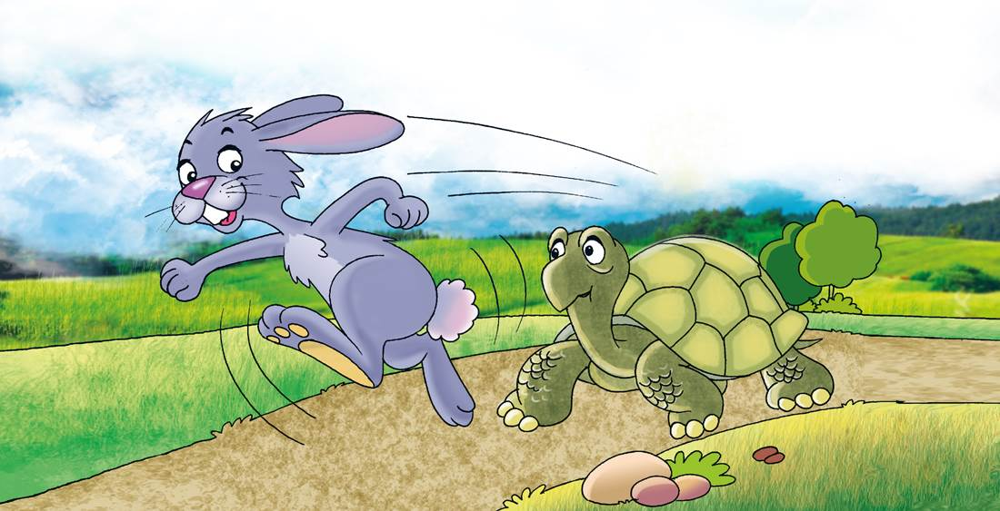

Reflexiono para avanzar
Alumno:
Reflexiono para avanzar
Alumno:
Formen parejas y lean el siguiente texto. Uno puede representar a la liebre y otro a la tortuga.
Esopo
En el mundo de los animales vivía una liebre muy orgullosa, porque ante todos decía que era la más veloz. Por eso, constantemente se reía de la lenta tortuga
—¡Miren la tortuga! ¡Eh, tortuga, no corras tanto que te vas a cansar de ir tan de prisa! —decía la liebre riéndose de la tortuga.
Un día, conversando entre ellas, a la tortuga se le ocurrió hacerle una rara apuesta a la liebre.
—Estoy segura de poder ganarte una carrera —le dijo.
—¿A mí? —preguntó, asombrada, la liebre.
—Pues sí, a ti. Pongamos nuestra apuesta en aquella piedra y veamos quién gana la carrera. La liebre, muy divertida, aceptó.
Todos los animales se reunieron para presenciar la carrera. Se señaló cuál iba a ser el camino y la llegada. Una vez que estuvo listo, comenzó la carrera entre grandes aplausos.
Confiada en su ligereza, la liebre dejó partir a la tortuga y se quedó remoloneando. ¡Vaya si le sobraba el tiempo para ganarle a tan lerda criatura!
Luego, empezó a correr, corría veloz como el viento mientras la tortuga iba despacio, pero, eso sí, sin parar. Enseguida, la liebre se adelantó muchísimo. Se detuvo al lado del camino y se sentó a descansar.
Cuando la tortuga pasó por su lado, la liebre aprovechó para burlarse de ella una vez más. Le dejó ventaja y nuevamente emprendió su veloz marcha.
Varias veces repitió lo mismo, pero, a pesar de sus risas, la tortuga siguió caminando sin detenerse. Confiada en su velocidad, la liebre se tumbó bajo un árbol y ahí se quedó dormida.
Mientras tanto, pasito a pasito, y tan ligero como pudo, la tortuga siguió su camino hasta llegar a la meta. Cuando la liebre se despertó, corrió con todas sus fuerzas, pero ya era demasiado tarde, la tortuga había ganado la carrera.
Aquel día fue muy triste para la liebre y aprendió una lección que no olvidaría jamás: no hay que burlarse jamás de los demás. También de esto debemos aprender que la pereza y el exceso de confianza pueden impedir alcanzar nuestros objetivos.